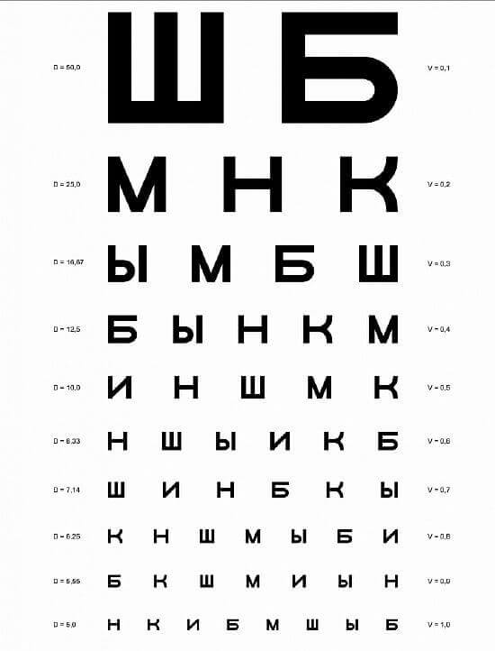
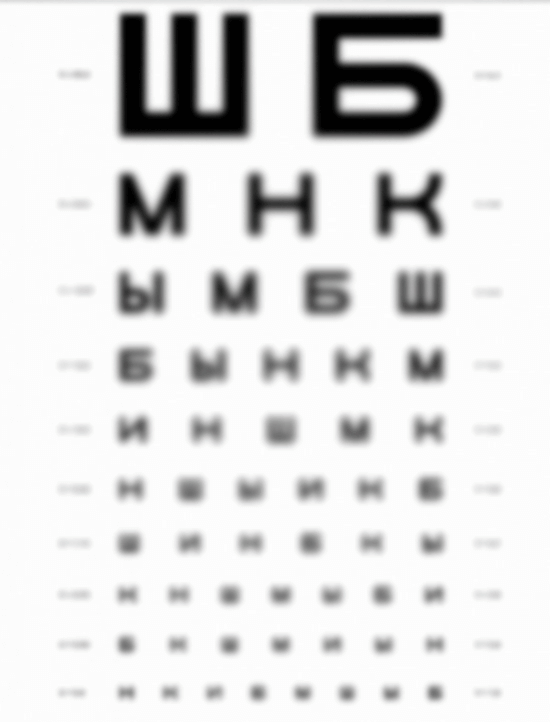
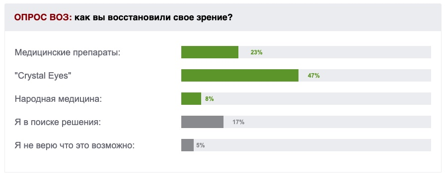

Здравоохранение
(сайт для тестового задания) ТЕПЕРЬ ЗРЕНИЕ МОЖНО ПОЛНОСТЬЮ ВОССТАНОВИТЬ ЗА МЕСЯЦ БЕЗ ХИРУРГИЧЕСКОГО ВМЕШАТЕЛЬСТВА
ПЛОХОЕ ЗРЕНИЕ И КАК С ЭТИМ БОРОТЬСЯ
Рассказывает врач высшей медицинской категории Саута Леонид Александрович.
Вступление: Согласно статистике, больше половины населения в той или иной степени сталкивалось с проблемой под названием «плохое зрение».Почти треть аварий на дорогах происходят именно из-за плохого зрения. Что делать при плохом зрении знает не каждый. И ладно если эта проблема появляется у людей пожилого возраста, но знали бы вы как много молодых людей и детей с ней сталкиваются. И должен сказать, их не меньше, чем людей пожилиго возраста.
Саута Леонид Александрович
Профессор, доктор медицинских наук, лучший офтальмолог-окулист
Здравоохранения .
Стаж работы - 42 года.
Корреспондент: "Леонид Александрович, вы можете озвучить какую-то статистику по плохому зрению касательно жителей ?"
Саута Л.А. Согласно статистике, больше половины населения в той или иной степени сталкивалось с проблемой под названием «плохое зрение». Что делать при этом многие не догадываются и просто стараются не замечать проблему. Огромное беспокойство вызывает тот факт, что в наш век проблемы со зрением есть не только у пожилых, но и у совсем молодых людей.
Если говорить о конкретных значениях, то приблизительно у 77-78% плохое зрение, из которых 36% припадает на молодую часть населения (до 30-ти лет), 10% это дети которые уже в своем ранем возрасте имеют плохое зрение. Остальная часть это люди преклонного возраста.
Корреспондент: "А в чем же причина столь плохого зрения?"
Саута Л.А. Проблемы со зрением обычно начинаются еще в школе. Большинство подростков ужасно стесняются появиться на уроке в очках. В результате перегружают и без того находящийся в напряжении зрительный аппарат, и их зрение начинает ухудшаться просто катастрофически. Так же компьютерные игры, которыми увлекаются дети, хотя что тут говорить, даже взрослые вынуждены сидеть за компьютерами, так как это их вид заработка.
Внизу я приведу вам пример, какое бывает зрение у моих пациентов на приеме:
Так человек с хорошим зрением видит таблицу
для проверки глаз:

Так человек с плохим зрением видит таблицу
для проверки глаз:

Что больше всего удивляет, сами же люди которые понимают что теряют зрение не могу осознать в чем же причина, а что еще ужаснее, они не знают как же эффективно бороться с плохим зрением. В панике они бегут в аптеки, где начинают покупать дорогостоящие препараты, чтобы попытаться вернуть зрение и в большинстве случаев это не помогает. Тут люди предстают перед сложным выбором: или ложиться на операцию по коррекции глаз или просто свыкнуться со своим плохим зрением и пытаться жить дальше.
Корреспондент: "Леонид Александрович, скажите, неужели нет возможности обойтись без операции, и все таки вернуть себе хорошее зрение?"
Саута Л.А. Если бы вы мне задали этот вопрос год назад, я бы даже не знал что вам посоветовать такого, чтобы было эффективно и тоже время безопасно. Но сейчас я могу с твердостью сказать что решение проблемы есть, есть препарат который поможет полностью востановить зрение и без хирургического вмешательства. Это "Crystal Eyes".
Корреспондент: "Crystal Eyes? никогда не слышала о таком. Можете рассказать по-подробнее"
Саута Л.А. Неудивительно что вы не слышали, этот препарат был создан нашими
учеными только в начале этого года. "Crystal Eyes"" — это современный препарат,
разработанный передовыми офтальмологами для быстрого и эффективного восстановления зрения.
Проверенное средство помогает избежать развития опасных заболеваний глаз. "Crystal Eyes"" основан
на нативных экстрактах растений, а потому отпускается без рецептов врача. После одного курса
применения, Ваше зрение начнет восстанавливаться. Вы почувствуете улучшение, после первого
применения капсул. Также могу вам перечислить результаты которые гарантирует препарат:
- Возвращение четкого зрения
- Уменьшение внутриглазного давления
- Исключение риска развития опасных заболеваний глаз
- Возможность забыть об очках и линзах.
Корреспондент: "Поделитесь пожалуйста, откуда такая увереность в эффективности данного препарата?"
Я сам участвовал в разработке и тестировании данного препарата и с увереностью могу сказать что "Crystal Eyes" соответствует самым высоким стандартам современной медицины, имеет все нужные сертификаты. Применяя это средство, вы будете замечать, насколько четче и ярче становится окружающий вас мир. Через 2-3 недели потребность в очках существенно снизится, а уже через месяц вы сможете обходиться без них 24 часа в сутки, и даже в сумерках будете видеть четко и ясно. Его можно использовать для детей школьного возраста для лечения и профилактики, так как "Crystal Eyes" не щиплет глаза.

Также при поддержке ВОЗ был проведен опрос, который превзошел наши ожидания:
Корреспондент: "Где можно приобрести Crystal Eyes? Думаю, нашим читателям будет интересен этот вопрос."
Саута Л.А. На данный момент лекарство производится малыми партиями, хотя производитель уже строит новые мощности, которые позволят увеличить объём в несколько раз. Поэтому, пока он не пытался выйти на прилавки аптечных сетей, потому что туда просто нечего отправлять - всё раскупается сразу же на производстве медицинскими компаниями. Более того - до недавнего момента в розницу лекарство было приобрести и вовсе невозможно, весь свободный объём уходил в специализированные медицинские центры и клиники.
Но в начале этого года производитель получил бюджетное финансирование для расширения производства. И по настоянию ВОЗ запустил специальный сайт производителя для розничных продаж, где в режиме онлайн можно оформить заявку на Crystal Eyes. Грубо говоря, достаточно оставить своё имя и телефон, после чего с вами свяжутся и уточнят все данные, ответив, заодно, на интересующие вопросы. Доставка производится почтой или курьером. Платите вы только после получения и проверки. Система максимально прозрачна и понятна, что делает её удобной для заказывающих что-то онлайн впервые. Я сам проверял её на днях и не обнаружил изъянов. На сайте даже показываются остатки лекарства на ближайшем к вам складе.
Корреспондент: "Спасибо вам Леонид Александрович что смогли поделиться столь полезной информацией. Что бы вы еще хотели добавить для наших читателей перед тем как мы завершим интервью"
Саута Л.А. Единственное, о чем хотелось бы сказать - не будьте равнодушными к собственной жизни. Плохое зрение - это крайне массовый недуг. И напомню, что 77% людей с плохим зрением, даже не догадываются, что могут потерять его вовсе. Согласитесь - обидно к 40 годам лишиться его полностью. Благодаря работе его создателей, у вас теперь есть доступ к уникальному препарату, которого больше нет нигде в мире. Это единственное средство для улучшения зрения, официально рекомендованное ВОЗ. Воспользуйтесь своим шансом вместо того, чтобы в итоге ослепнуть совсем.
Важно! Исследования доказали, что осень - лучшее время для начала лечения плохого зрения. Благодаря понижению средней температуры, ускоряется обмен веществ и циркуляция крови в сосудах, которые увеличивают приток крови и кислорода в мозг, эффект от использования капсул возрастает. Излечение от плохого зрения происходит на 47% быстрее, чем это происходило бы в теплое время года.
Исследования
Результаты лабораторных тестов "Crystal Eyes" в ВОЗ:
Было отобрано 100 добровольцев разного возраста страдающих тяжелой, легкой и средне-тяжелой формами слепоты. В результате 30-дневного исследования были получены следующие результаты:
1.Эффективность Crystal Eyes, подсчитанная по стандартной методике (количество
выздоровевших к общему числу больных в группе из 100 человек, проходивших курс лечения)
составила:
– при избавлении от плохого зрения – 99%
– полное восстановление зрения до нормального состояния – 100%.
*Под
восстановлением в данном случае понимается избавление слепоты: близорукости и
дальнезоркости.
2. Нежелательных побочных эффектов, в том числе аллергических реакций не выявлено.
3. "Crystal Eyes" признан ведущим препаратом в борьбе с плохим зрением.
P.S.: Мы попросили Леонида Александровича сделать дополнительную скидку для наших читателей. Он пошёл нам навстречу, и сейчас каждый может приобрести Crystal Eyes с дополнительной скидкой в 70%.
Андрей, не переживайте, и продолжайте принимать препарат. Главное
соблюдайте способ применения что указан в инструкции.
С уважением, Леонид.
Народ, помогите! Устал уже от своего зрение. Не вижу даже на расстоянии вытянутой руки, все прям плывет перед глазами. Уже просто не знаю, что делать. Принимаю таблетки периодически, пью разные лекарства но они не помогают:(
Сергей, бери Crystal Eyes, не пожалеешь. У самого проблемы были такие же, даже один раз чуть в аварию не попал из-за этого, зарекся за руль больше не садится. Но слава богу я попал в свое время на эту статью и приобрел. За месяц стал лучше видеть, и снова сел за руль машины. Поверь, возьми, и все наладится вот увидишь
Как приобребрести Crystal Eyes?
Ян, спасибо, уже заказала
а можешь сказать сколько доставка будет идти в ?
Наталия, ну мы с тобой с одного города, так что примерно за 3 дня придет)
Просто невероятное средство, всем советую, я сам таксист, и для меня зрение одно из самых важных показателей в моей работе, но последнее время заметил что оно начало падать. И тут как назло фирма решила сделать медостмотр и до него оставался у меня всего месяц. Я кидался в панике так как не знал что уже делать, думал проплатить, что бы с работы не уволили. Но жена посоветовала купить "Crystal Eyes", вы бы знали, они меня вытащили из такой ж*пы что вы даже не представляете, половину народу поувольняли без разговоров. Я остался так как обследование показало что зрение у меня просто отменное. Спасибо ученым за разработку данного препарата
Андрей, с твоих слов результат вправду отличный, думаю стоит и себе заказать.
Беспокоила возрастная дальнозоркость, были подозрения на развитие катаракты. Страх перед операцией преодолеть не могу: много слышал о тяжелых осложнениях. Препарат Crystal Eyes помог значительно улучшить зрение и ликвидировать угрозу катаракты всего за 7 недель.
Вижу не только у меня такие проблемы, на слава богу что мне попался на глаза Crystal Eyes, избавил меня от дальнозоркости, так быстро как не смогли сделать десятки лекарств и препаратов
Скажите народ, оно поможет? пробовали? А то я почти потерял зрение, а от лекарств никакого толку
Александр, да, несомненно. Эффект у препарата очень сильный и самое главное что даже здоровью не вредит. Так что торопись заказывать!
Проблемы со зрением серьезно угрожали моей профессиональной деятельности. Быстрая усталость, покраснение и выделение слез не давали полноценно работать. Врачи не могли установить диагноз, пришлось спасаться самостоятельно с помощью Crystal Eyes. Прошел 2 курса и полностью решил свою проблему.
Спасибо Леонид Александровичу. Если бы не он, то я бы не поверила в эффективность Crystal Eyes! Я больше 5 лет прожила с мужем у которого близорукость и знаю что это такое. Ему даже стработы пришлось уйти, ну как уйти его добровольно-принудительно сместили с должности. После того как неделю принимала его галаза каждый вечер, Crystal Eyes заметила в нем разительные перемены! Самое интересное, он даже не заметил как к нему вернулось зрение! Я уже даже его прошу что-то посмотреть если мне надо, так как у него теперь самое лучшее зрение в семье) Спасибо Вам, Леонид Александрович!
И посылка в пришла очень быстро.
Ксения, не стоит благодарности. Вы лучше скажите, пожалуйста, сколько у вас заняло
лечение по срокам?.
С уважением, Леонид.
Леонид, примерно месяц, после месяца я вообще перестала замечать что бы он жаловался на плохое зрение.
Ксения, понял, спасибо.
С уважением, Леонид.
Поздравьте меня, я полностью восстановила зрение!! Даже самой не верится!!! Вчера проверяла в салоне очков, зрение - ЕДИНИЦА! Муж тоже начал принимать, хотя у него не такое плохое зрение, как было у меня.
Там скидка 50% действует, торопитесь!
На официальном сайте покупала, очень быстро перезвонили и заказ подтвердили.
Хочется наконец видеть нормально)
Макс, тут увы ничего не поделаешь, так как что бы разработать данный препарат ушло масу
времени и темболее средств. Зато, спустя столько времени, можно наконец избавиться от
такого недуга как плохое зрение. Рад за ваших родителей.
С уважением, Леонид.
Ещё раз повторяю, что Crystal Eyes можно заказать ТОЛЬКО на официальном сайте производителя, чтобы не ошибиться просто нажмите на
кнопку "Перейти на сайт производителя" чуть ниже! Специально для наших читателей есть
отличная скидка по договоренности с производителем, но она будет действовать совсем не
долго, так что поторопитесь с заказом!
И остерегайтесь, пожалуйста,
подделок.
С уважением, Леонид.
Леонид Александрович, спасибо вам! Попробовал, вижу намного четче. Да и ощущения прекрасные. Посмотрим, что да как. Пока рано говорить, позже отпишусь. Так что думаю, все выгорит!